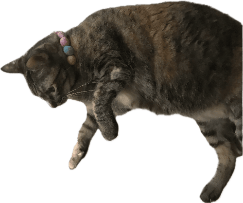

林庭妤
中原大學資訊管理學系
2005.7.24 ENFP
來自台南 外向 開朗
喜歡打遊戲 唱歌 旅行
每個人都是自己幸福的建築師

中原大學資訊管理學系
2005.7.24 ENFP
來自台南 外向 開朗
喜歡打遊戲 唱歌 旅行
每個人都是自己幸福的建築師
在高中時與朋友一起報名救護的課程，過程中學習了一些基本的急救方法，
包括基本救命術、創傷救命術、還有一些包紮止血的技術，
雖然前去上課的許多都是護理師或護專生，而我們不是本科專業，
但我們還是努力跟上其他人的步伐，最終還是成功通過了考試，
獲取了BLS、BTLS、CPR+AED的合格證照，
不僅能讓自己多探索學習一些不同的技能，也從中領悟到了堅持的重要。
高中時連續參與舉辦了兩次小公民營，
第一次擔任隊輔的工作，第二次則是行政與相手，
不只挑戰了不同的工作，領導新加入的學妹一起舉辦對我來說也是一大挑戰，
在過程中雖然有過意見不歧或突發狀況的發生，但最後都有好好的解決每個問題，
在營隊中不只從教導小朋友知識中獲得了成就感，也學習到了怎麼去規劃好一個營隊的舉辦。
在大學的暑假，我回到了母校幫忙舉辦了小心肝的營隊，
我擔任了機動與隊輔的位置，營隊主要是要幫助剛升國一的新生認識學校與同學
在營隊中，看到了妹妹們懵懂且害羞的模樣不僅讓人回想起自己當初剛升國中的記憶，
看到經過一整天營隊下來，他們之間更認識了彼此、更熟悉校園，心中莫名的湧起感動，
也期許他們未來的校園生活可以開心，即使準備過程與營隊當天很熱很累，
但我想這就是舉辦這個營隊的初衷。